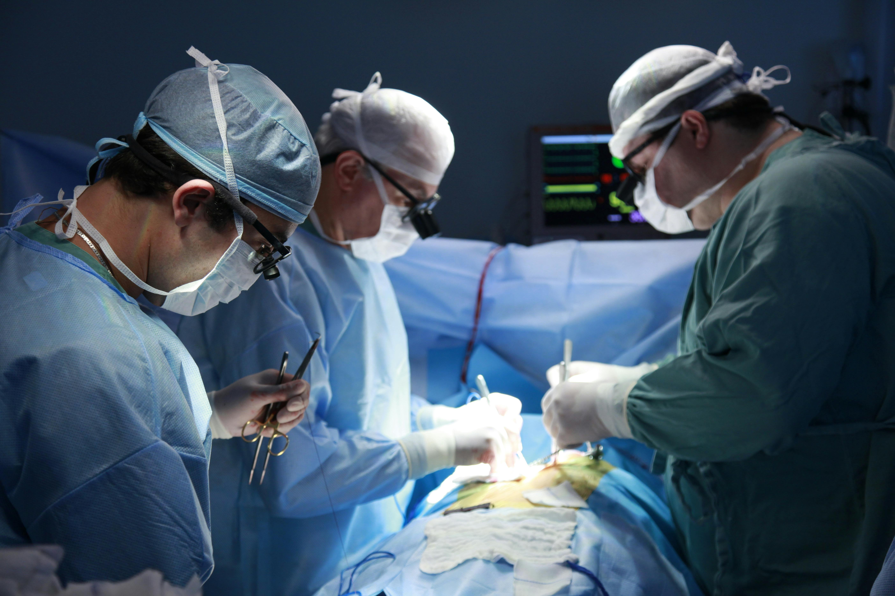

OUR LATEST NEWS
The Harmony Blog

10 April 2024 / Embracing New Beginnings
A Mother's Tender Moment In Her Life
As the surgical team works diligently, a mother's determination and love create an unforgettable moment of connection with her newborn, etched in the heart forever.
Read More

10 April 2024 / A successful Rebirth
Heart Transplantation Changed My Life: Thomas's Story
Thomas says - Receiving a heart transplant wasn't just a medical procedure for me it was a rebirth, a chance to start anew with a beating heart full of gratitude and hope..
Read More
10 April 2024 / New Eye Technology
"Vision Reimagined: Embracing the Future of Eye Care Technology"
Unlocking a clearer tomorrow with cutting-edge eye technology at our hospital. See the world in a whole new light with our innovative vision solutions.
Read More